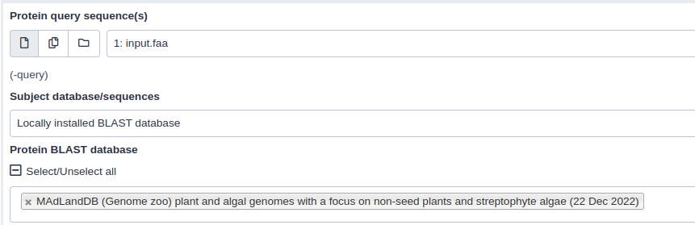

NCBI BLAST+ against the MAdLand
Under Development!
This tutorial is not in its final state. The content may change a lot in the next months. Because of this status, it is also not listed in the topic pages.
 Deepti Varshney
Deepti Varshney
OverviewQuestions:Objectives:
What is MAdLand DB?
How can we perform Blast analysis on Galaxy?
Requirements:
Load FASTA sequence into Galaxy
Perform NCBI-Blast+ analysis against MAdLandDB
Time estimation: 15 minutesSupporting Materials:Last modification: Feb 17, 2023
 Questions:
Questions:
Introduction
MAdLandDB is a protein database comprising of a comprehensive collection of fully sequenced plant and algal genomes, with a particular emphasis on non-seed plants and streptophyte algae. Additionally, for comparative analysis, the database also includes genomes from various other organisms such as fungi, animals, the SAR group, bacteria, and archaea. The database is actively developed and maintained by the Rensing lab and released in the MAdLand setting. It employs a system of species abbreviation using a 5 letter code, which is constructed using the first three letters of the genus and the first two letters of the species name, for example, CHABR for Chara braunii. Furthermore, the database provides gene identification through the addition of gene ID’s and supplementary information such as the encoding source of the gene, whether it is plastome encoded (pt) or transcriptome-based (tr) in cases when a genome is not yet available. The key advantage of this database is its non-redundant nature, and the fact that all sequences are predominantly from genome projects, thereby increasing their reliability.
AgendaIn this tutorial, we will deal with:
Get data
Hands-on: Data Upload
Create a new history for this tutorial and give it a proper name
Click the new-history icon at the top of the history panel.
If the new-history is missing:
- Click on the galaxy-gear icon (History options) on the top of the history panel
- Select the option Create New from the menu
- Click on galaxy-pencil (Edit) next to the history name (which by default is “Unnamed history”)
- Type the new name
- Click on Save
If you do not have the galaxy-pencil (Edit) next to the history name:
- Click on Unnamed history (or the current name of the history) (Click to rename history) at the top of your history panel
- Type the new name
- Press Enter
Import the file
query.faafrom Zenodohttps://zenodo.org/api/files/40445ead-6429-463c-bfa5-e1fb92095af8/query.faa
- Copy the link location
Open the Galaxy Upload Manager (galaxy-upload on the top-right of the tool panel)
- Select Paste/Fetch Data
Paste the link into the text field
Press Start
- Close the window
We just imported a FASTA file into Galaxy. Now, the next would be to perfrom the BLAST analysis against MAdLandDB.
Perform NCBI Blast+ on Galaxy
Since MAdLandDB is the collection of protein sequences, You can perform BLASTp Tool: toolshed.g2.bx.psu.edu/repos/devteam/ncbi_blast_plus/ncbi_blastp_wrapper/2.10.1+galaxy2 and BLASTx Tool: toolshed.g2.bx.psu.edu/repos/devteam/ncbi_blast_plus/ncbi_blastx_wrapper/2.10.1+galaxy2 tools.
Hands-on: Similarity search against MAdLand Database
- BLASTp Tool: toolshed.g2.bx.psu.edu/repos/devteam/ncbi_blast_plus/ncbi_blastp_wrapper/2.10.1+galaxy2 OR BLASTx Tool: toolshed.g2.bx.psu.edu/repos/devteam/ncbi_blast_plus/ncbi_blastx_wrapper/2.10.1+galaxy2 with the following parameters:
- “Protein query sequence(s)”:
Amino acid input sequence(In case of BLASTp) OR- “Translated nucleotide query sequence(s)”:
Translated nucleotide input sequence(In case of BLASTx)- “Subject database/sequences”:
Locally installed BLAST database- “Protein BLAST database”:
MadLandDB (Genome zoo) plant and algal genomes with a focus on non-seed plants and streptophyte algae (22 Dec 2022)- “Set expectation value cutoff”:
0.001- “Output format”:
- In “Output Options”:
Tabular (extended 25 columns)
Blast output
tool The BLAST output will be in tabular format (you can select the desired output format from the drop down menu) and include the following fields :
| Column | NCBI name | Description |
|---|---|---|
| 1 | qseqid | Query Seq-id (ID of your sequence) |
| 2 | sseqid | Subject Seq-id (ID of the database hit) |
| 3 | pident | Percentage of identical matches |
| 4 | length | Alignment length |
| 5 | mismatch | Number of mismatches |
| 6 | gapopen | Number of gap openings |
| 7 | qstart | Start of alignment in query |
| 8 | qend | End of alignment in query |
| 9 | sstart | Start of alignment in subject (database hit) |
| 10 | send | End of alignment in subject (database hit) |
| 11 | evalue | Expectation value (E-value) |
| 12 | bitscore | Bit score |
The fields are separated by tabs, and each row represents a single hit. For more details for BLAST analysis and output, we recommand you to follow the Similarity-searches-blast tutorial.
More Similarity Search Tools on Galaxy
- Diamond: Diamond Tool: toolshed.g2.bx.psu.edu/repos/bgruening/diamond/bg_diamond/2.0.15+galaxy0 is a high-throughput program for alignment of large-scale data sets. It aligns sequences to the reference database using a compressed version of the reference sequences called a “database diamond” which is faster to read and can save computational time (~20,000 times the speed of Blastx, with high sensitivity).
See Buchfink et al. 2014 for more discussion.
Key points
Blast tool searches a database of sequences for similar sequences to a query sequence.
Diamond quickly aligns large-scale data sets using a compressed version of the reference sequences called a “database diamond”.
MAdLand is a database of fully sequenced plant and algal genomes, with an emphasis on non-seed plants and streptophyte algae that can be use for sequence similarity search.
Frequently Asked Questions
Have questions about this tutorial? Check out the FAQ page for the Sequence analysis topic to see if your question is listed there. If not, please ask your question on the GTN Gitter Channel or the Galaxy Help ForumUseful literature
Further information, including links to documentation and original publications, regarding the tools, analysis techniques and the interpretation of results described in this tutorial can be found here.
References
- Cock, P. J. A., B. A. Grüning, K. Paszkiewicz, and L. Pritchard, 2013 Galaxy tools and workflows for sequence analysis with applications in molecular plant pathology. PeerJ 1: e167. 10.7717/peerj.167
- Buchfink, B., C. Xie, and D. H. Huson, 2014 Fast and sensitive protein alignment using DIAMOND. Nature Methods 12: 59–60. 10.1038/nmeth.3176
- Cock, P. J. A., J. M. Chilton, B. Grüning, J. E. Johnson, and N. Soranzo, 2015 NCBI BLAST+ integrated into Galaxy. GigaScience 4: 10.1186/s13742-015-0080-7
Feedback
Did you use this material as an instructor? Feel free to give us feedback on how it went.
Did you use this material as a learner or student? Click the form below to leave feedback.

Citing this Tutorial
- Deepti Varshney, NCBI BLAST+ against the MAdLand (Galaxy Training Materials). https://training.galaxyproject.org/training-material/topics/sequence-analysis/tutorials/ncbi-blast-against-the-madland/tutorial.html Online; accessed TODAY
- Batut et al., 2018 Community-Driven Data Analysis Training for Biology Cell Systems 10.1016/j.cels.2018.05.012
Congratulations on successfully completing this tutorial!@misc{sequence-analysis-ncbi-blast-against-the-madland, author = "Deepti Varshney", title = "NCBI BLAST+ against the MAdLand (Galaxy Training Materials)", year = "", month = "", day = "" url = "\url{https://training.galaxyproject.org/training-material/topics/sequence-analysis/tutorials/ncbi-blast-against-the-madland/tutorial.html}", note = "[Online; accessed TODAY]" } @article{Hiltemann_2023, doi = {10.1371/journal.pcbi.1010752}, url = {https://doi.org/10.1371%2Fjournal.pcbi.1010752}, year = 2023, month = {jan}, publisher = {Public Library of Science ({PLoS})}, volume = {19}, number = {1}, pages = {e1010752}, author = {Saskia Hiltemann and Helena Rasche and Simon Gladman and Hans-Rudolf Hotz and Delphine Larivi{\`{e}}re and Daniel Blankenberg and Pratik D. Jagtap and Thomas Wollmann and Anthony Bretaudeau and Nadia Gou{\'{e}} and Timothy J. Griffin and Coline Royaux and Yvan Le Bras and Subina Mehta and Anna Syme and Frederik Coppens and Bert Droesbeke and Nicola Soranzo and Wendi Bacon and Fotis Psomopoulos and Crist{\'{o}}bal Gallardo-Alba and John Davis and Melanie Christine Föll and Matthias Fahrner and Maria A. Doyle and Beatriz Serrano-Solano and Anne Claire Fouilloux and Peter van Heusden and Wolfgang Maier and Dave Clements and Florian Heyl and Björn Grüning and B{\'{e}}r{\'{e}}nice Batut and}, editor = {Francis Ouellette}, title = {Galaxy Training: A powerful framework for teaching!}, journal = {PLoS Comput Biol} Computational Biology} }